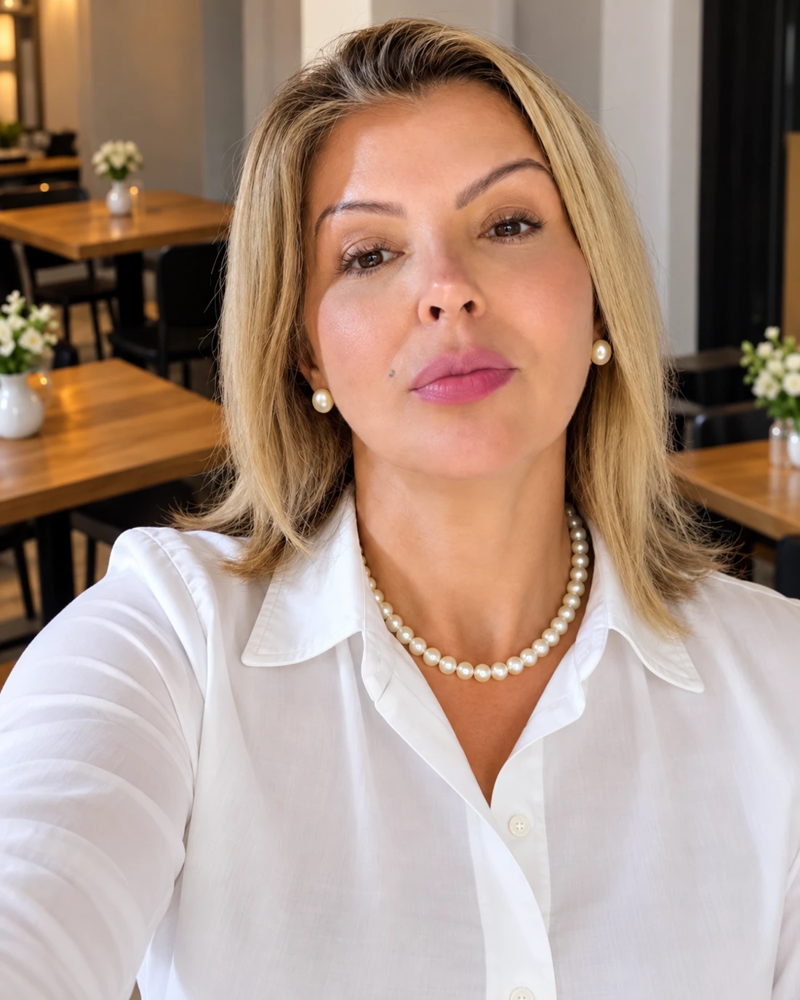

Escuta psicanalítica
Um espaço para falar sobre sentimentos, relações e questões pessoais, respeitando sua história e sua singularidade.
Conversar sobre atendimentoUM ESPAÇO PARA SER OUVIDO
Há momentos em que dividir o que você sente é o primeiro passo. Um espaço de escuta para você e de acolhimento para sua família.
Conversar pelo WhatsApp
01 / QUEM ACOLHE VOCÊ
Sou Roberta Nascimento, terapeuta, psicanalista clínica, teóloga e pós-graduada em Psicanálise. Minha atuação inclui o acolhimento de pessoas que vivenciaram abusos e de famílias que convivem com a dependência química.
Também atuo como palestrante e desenvolvo o Projeto Família, uma iniciativa dedicada ao apoio a familiares de pessoas com dependência química.
02 / ÁREAS DE ATUAÇÃO
Conheça as frentes de acolhimento e converse para entender qual caminho faz sentido para você.
Um espaço para falar sobre sentimentos, relações e questões pessoais, respeitando sua história e sua singularidade.
Conversar sobre atendimentoEscuta cuidadosa para pessoas que vivenciaram abusos, com respeito aos limites e ao tempo de cada pessoa.
Conhecer o acolhimentoApoio a familiares que precisam de espaço para falar, compreender suas próprias necessidades e buscar orientação.
Conhecer o Projeto FamíliaConversas sobre família, acolhimento e dependência química. Consulte temas, formatos e disponibilidade para o seu evento.
Conversar sobre uma palestra03 / PROJETO FAMÍLIA
A dependência química atravessa a vida de toda a família. Seus sentimentos também merecem espaço.
Conhecer o projetoVocê pode apoiar quem ama sem esquecer de acolher a si mesmo.
01 Um lugar para compartilhar o que você vive.
02 Atenção às necessidades de quem cuida.
03 Uma conversa sobre caminhos possíveis.
UMA CONVERSA NO SEU TEMPO
Escolha um assunto para conhecer a proposta e começar uma conversa com Roberta.
SEU PRÓXIMO PASSO
Converse sobre a escuta psicanalítica, esclareça suas dúvidas e consulte os formatos de atendimento.
04 / O PRIMEIRO PASSO
Você não precisa organizar tudo o que sente antes de entrar em contato.
Envie uma mensagem para contar, no seu tempo, o que você procura.
Converse sobre a proposta, os formatos de atendimento e a disponibilidade.
Se fizer sentido para você, combine os detalhes diretamente com Roberta.
05 / DÚVIDAS FREQUENTES
Não é preciso ter um discurso pronto. Você pode começar contando o que motivou sua busca, com as palavras que conseguir encontrar.
O projeto é dedicado ao apoio a famílias de pessoas com dependência química. Entre em contato para conhecer a proposta e os detalhes de participação.
Essas informações são combinadas diretamente com Roberta. Use o botão de contato para consultar disponibilidade, formatos e valores.
Sim. Envie uma mensagem com o tema de interesse, o público, a data e o formato desejado para conversar sobre a possibilidade.
UM CONVITE PARA COMEÇAR
Entre em contato com Roberta para tirar dúvidas e conversar sobre o próximo passo.
Conversar pelo WhatsApp (19) 99949-1974